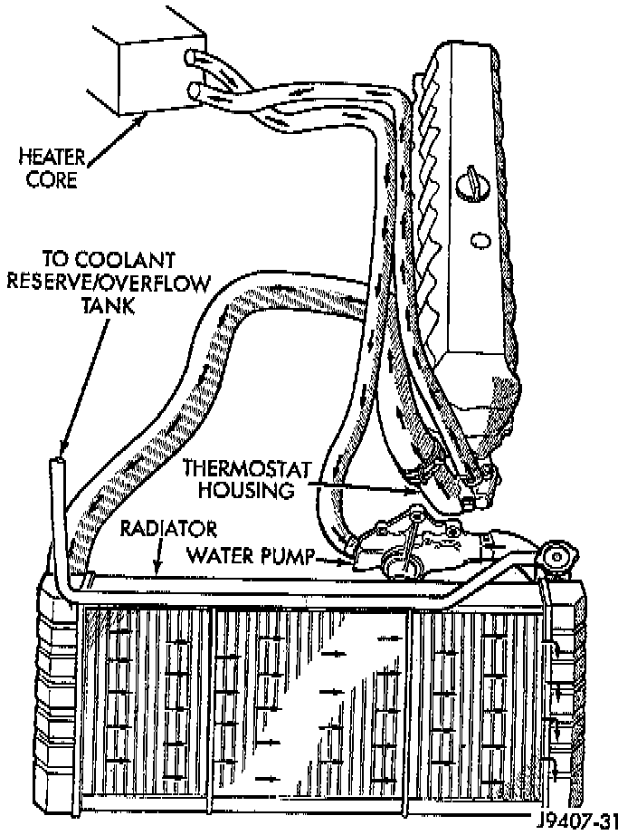

General Information

PURPOSE
The cooling system regulates engine operating temperature. It allows the engine to reach normal operating temperature as quickly as possible. It also maintains normal operating temperature and prevents overheating. The cooling system also provides a means of heating the passenger compartment and cooling the automatic transmission fluid (if equipped).
OPERATION
The cooling system is pressurized and uses a centrifugal water pump to circulate coolant throughout the system.
NOTE: An optional factory installed maximum duty cooling package is available on most models. This package will provide additional cooling capacity for vehicles used under extreme conditions such as trailer towing in high ambient temperatures.
COMPONENTS
The cooling system consists of:
^ A radiator
^ Cooling fan
^ Thermal viscous fan drive
^ Fan shroud
^ Radiator pressure cap
^ Thermostat
^ Coolant reserve/overflow system
^ Transmission oil cooler (if equipped with an automatic transmission)
^ Coolant
^ Water pump
^ Hoses and hose clamps